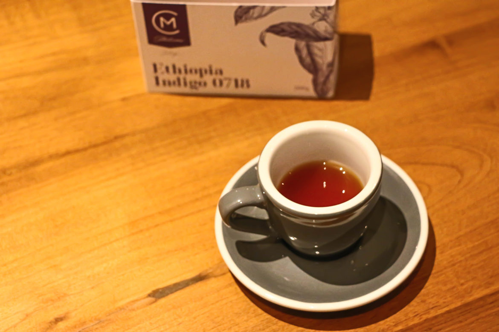

Hello and Welcome...!
We are the friendliest Oasis in town where you can sit back , relax whilst enjoying our massive portions of mouth-watering food & beverages!
Established in 2018, the "Kopi Kade" is an independent counter service cafe centrally located in Kandy's most glamorous neighborhood, serving coffee -made with Sri Lankas premium mountain grown arabica beans.

The perfect blend of Sri Lankan mountain grown coffee kicks in a distinct syrupy + dark chocolate, heavy bodied flavor that has a hint of a nutty aftertaste.Altitude has a deep influence in coffee, as well as weather conditions. Highland grown beans are hard, dense and possess the potential for an exceptional coffee flavour. Generally as growing elevation increases and more fertile soil is present, a coffee's flavor profile becomes more pronounced and distintinctive.Mountain coffee is generally more costly due to their exceptional flavor & vibrancy, lower yield per coffee tree & the challenge of transportation. However we at Kopi kade know what good coffe is & strive to go to the highest mountain for you.